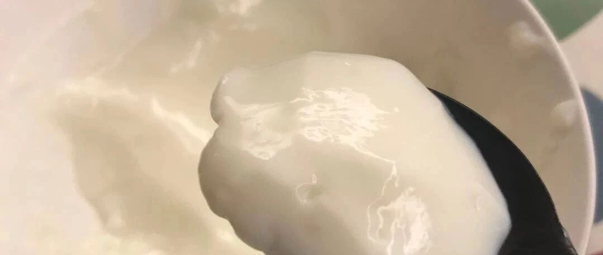

在勺子边缘来回试探的双皮奶
好久没更新，这个正月，事儿太多。最近大家憋在家里，网上烘焙博主关注度空前提高，朋友圈发掘了很多大厨师。我觉得挺好的，以后不憋着的时候，也应该这样。
今天做个简单的双皮奶，冷热都好吃，还能消耗因为早上起得晚没有喝掉的牛奶。
很多方子要用水牛奶啊啥的，也没啥必要，烘焙还是讲究个随性，和伸手就来吧。

另外，要嘱咐的就是，蒸的时候要转中小火，要是觉得不放心，就小火蒸20分钟，关火以后，再多闷10分钟好了。火大了，蛋清就容易漾出来。
哦，还有朋友喜欢很光滑的表面，那就蒸的时候碗上盖上保鲜膜。
家里人都喜欢吃冷的，蒸好以后，放凉，放冰箱冷藏2小时就可以吃了。
很多亲第二层奶皮做不好，我觉得其实无所谓，这事儿吧，就是本来牛奶和蛋清在一起也能蒸的很好吃。多一层奶皮就是更有质地。
如果想做好，在往外倒的时候，要左右倒，防止奶皮过多的黏在碗上，后面就不容易浮起来。再就是往回倒的时候，沿着碗沿慢慢倒回去，这样奶皮就会浮起来。下图就是倒完的样子，不保险的话，就留底稍多一点就好。